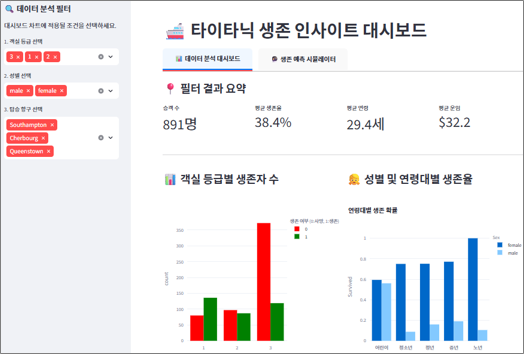

타이타닉 데이터셋을 활용하여 생존율에 영향을 미치는 주요 요인을 분석하고, 이를 바탕으로 생존 예측 분석을 대시보드까지 구현하는 것을 목표로 한다.
Kaggle Titanic이나 파이썬의 seaborn 라이브러리를 통해 데이터를 가져온다. 또는 실습자료 "data/titanic.csv"에서 데이터를 로드할 수 있다.
생존 여부를 예측하기 위한 머신러닝 알고리즘을 적용하고, 모델의 성능을 평가한다.
분석 결과를 비전문가도 이해할 수 있게 정리하고 Streamlit을 이용하여 대시보드를 구현한다.